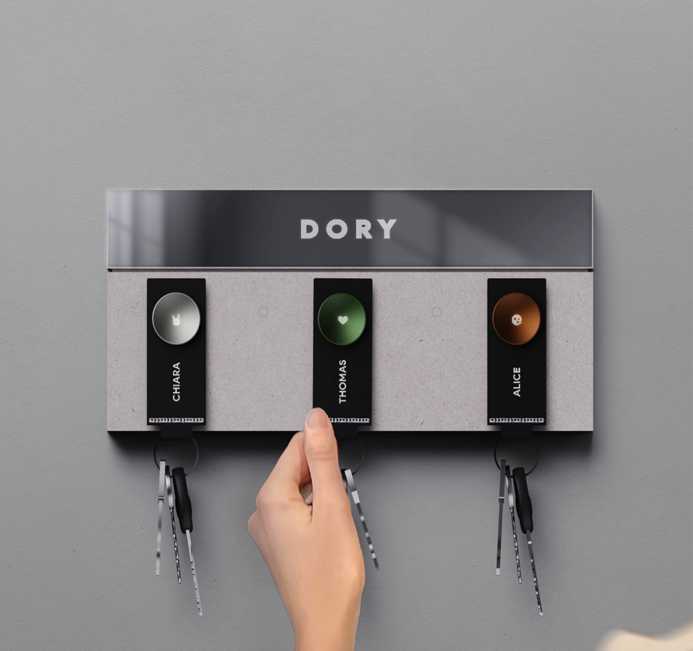
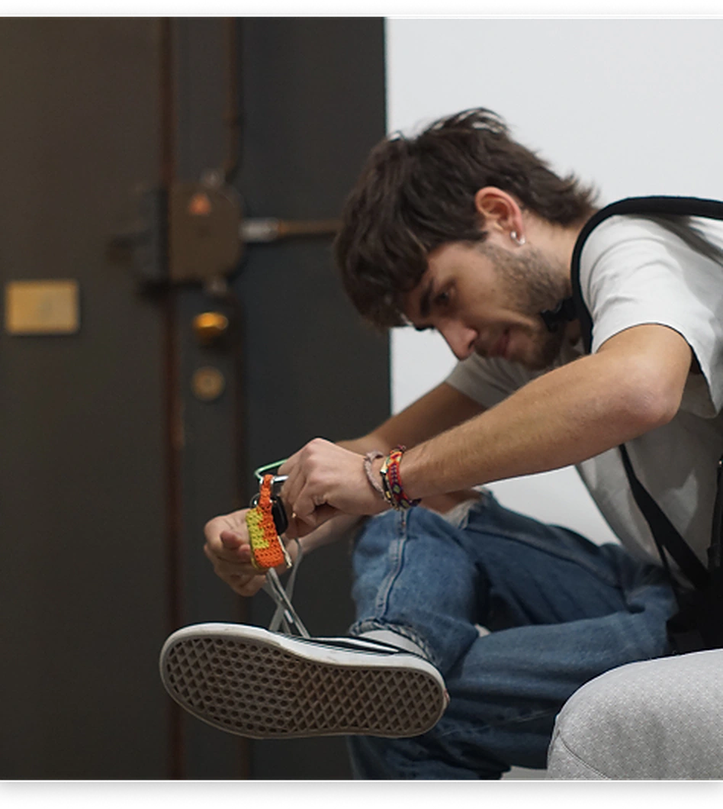
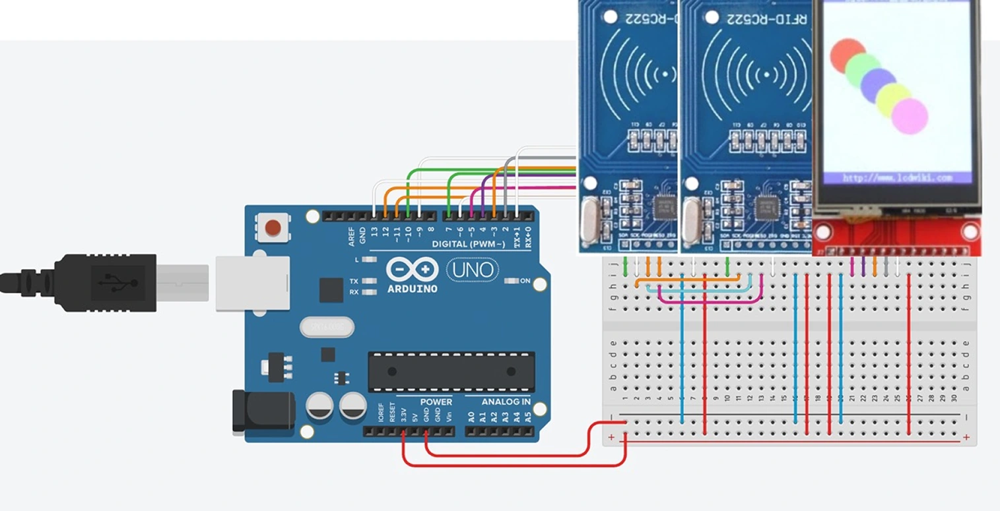
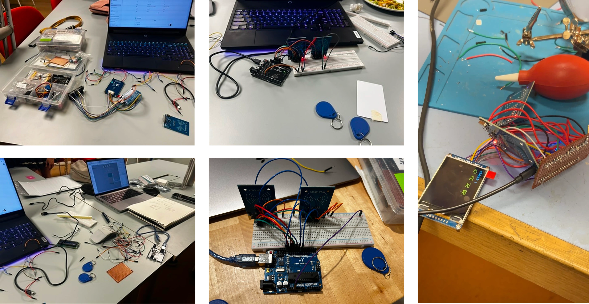
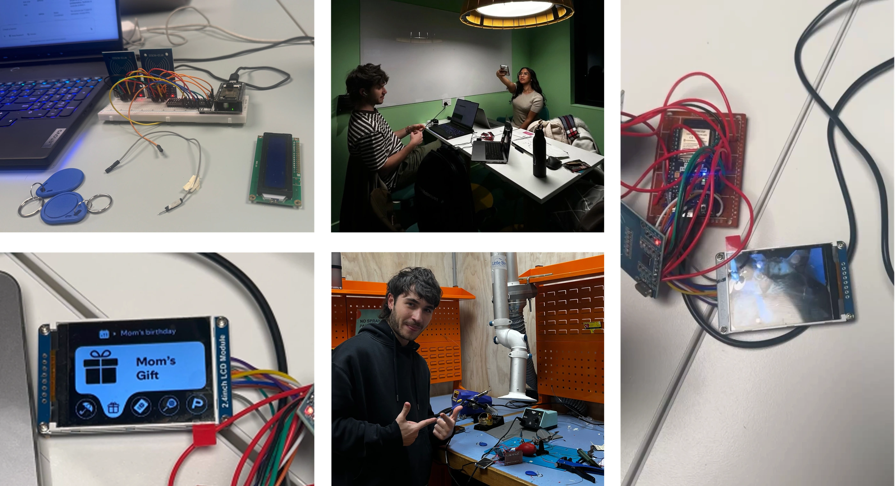
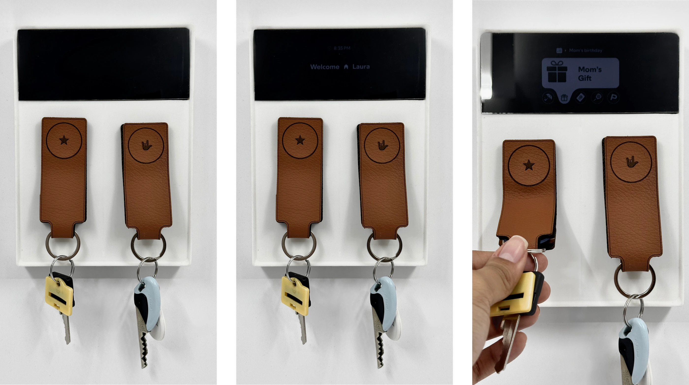
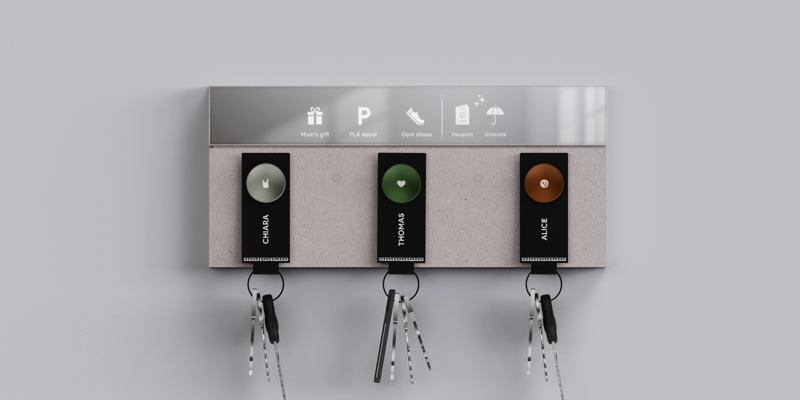
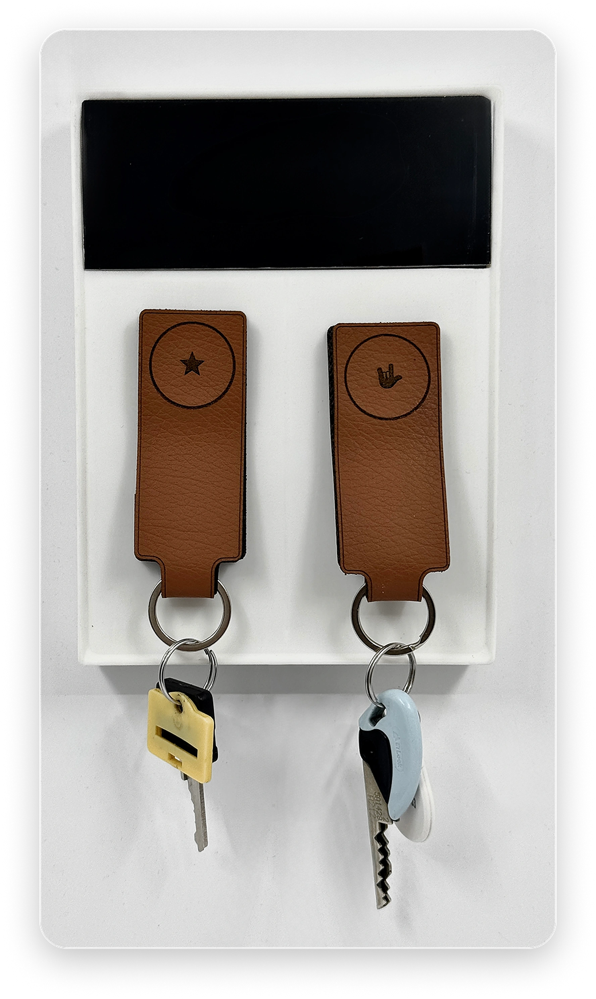
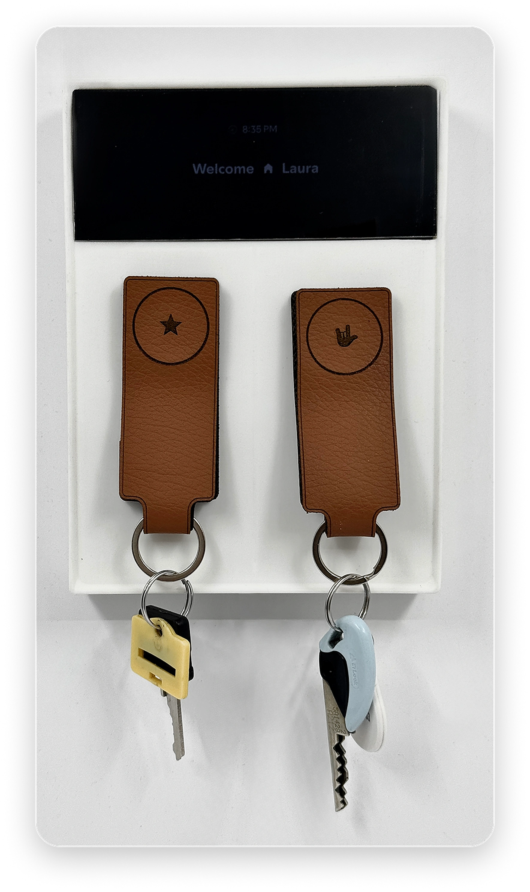

DORY
A smart key-holder that helps every household member leave home prepared.

PROBLEM
Leaving home is one of the easiest moments to get wrong. People are often rushed, distracted and thinking about the day ahead, which makes small essentials easy to forget until it is too late. In a shared household, these moments build into repeated stress, missed items and last-minute communication gaps. The opportunity was to design a system that supports people at the exact point of departure, helping them leave prepared without adding another task to their routine.

PROPOSED SOLUTION
Dory transforms a traditional key holder into a smart departure hub that helps household members leave home prepared. Using RFID-based user recognition, the system identifies who is leaving and displays personalised reminders relevant to their day. Weather-aware prompts help prevent common oversights, such as forgetting an umbrella, while a shared digital messaging system replaces temporary notes with a persistent communication space for the household. By embedding reminders and information into an existing daily habit, Dory reduces forgetfulness without requiring users to adopt new behaviours or routines.
PROCESS

We began the circuit design by mapping how the key-holder would recognise different users and display the right information on screen. The early setup used an Arduino Uno, two RFID readers and a TFT display to test the core interaction logic before moving into the final prototype. The key decision was to separate user recognition from the display output, allowing each RFID scan to trigger a personalised screen state. This helped us test wiring, input reliability and screen feedback early, making sure the technical system supported the intended user experience rather than adding unnecessary complexity.

We prototyped Dory through repeated hardware testing, moving from loose breadboard circuits to a more integrated RFID and display setup. Each build tested a specific part of the interaction: whether the reader could recognise different tags, whether the screen could respond clearly, and whether the wiring could support two RFID modules at once. The main decision was to keep testing the technical system through the lens of the user experience, not just whether the circuit worked. This helped us refine the recognition flow, reduce wiring issues and make sure each scan produced immediate, understandable feedback.

OUTCOME




IMPACT
User testing showed Dory achieved 90% task success and reduced task completion time by 25%. Participants understood the RFID interaction quickly and were able to act on personalised reminders without extra instruction. The prototype proved that a familiar household object could become a useful departure checkpoint, reducing forgetfulness at the exact moment users leave home.
MY CONTRIBUTION
For Dory, my contribution focused on shaping the smart key-holder into a clear everyday interaction. I designed the user flow for RFID recognition, personalised reminders, weather prompts and digital post-it notes, making sure the system felt simple at the moment someone leaves home. I also supported prototyping and testing, refining the timing, screen states and reminder logic based on how users understood the interaction. The final prototype achieved 90% task success and reduced task completion time by 25%, showing how a simple household object could improve daily routines through thoughtful interaction design.
TEAM
- Manu PadmaraagamDesign / Prototyping Lead
- Thomas ShortDesign / Prototyping Lead
- Laura SenasDesign / Digital Lead